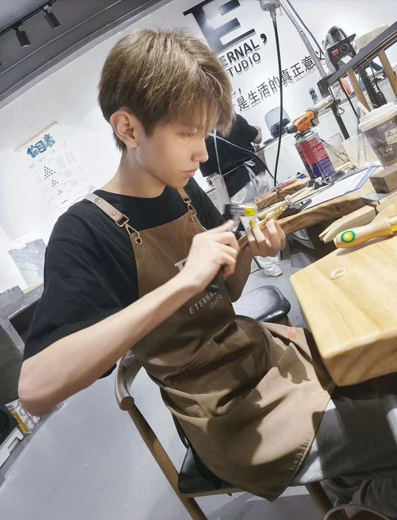
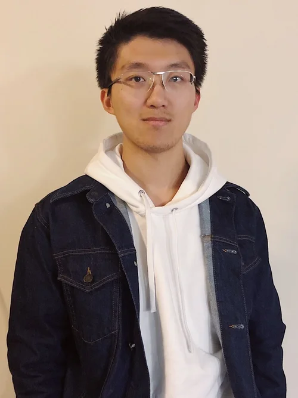
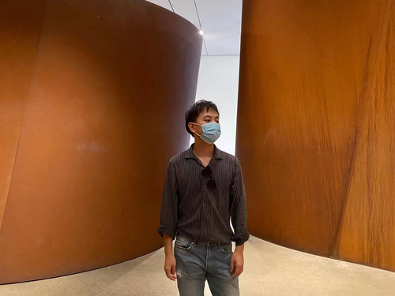
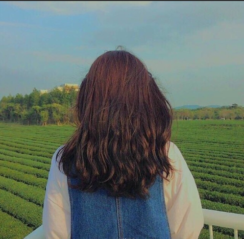

Graduate Student Testimonials

Student Liu
Offer(s): University of Pennsylvania; Cornell University; Cornell Tech; Brown University; Carnegie Mellon University (with $9,000 scholarship); Columbia University; New York University
Area(s) of Interest: Computer Science; Technology Entrepreneurship; Educational Technology
Undergraduate: Top 30+ US University - Computer Science & Studio Art
GPA: 3.7+
GRE: 330+
TOEFL: Waived
“My initial encounter with AUCTA dates back to my undergraduate application days. As a high school student, I opted for AUCTA’s expertise to navigate through the application process. Back then, AUCTA meticulously planned a series of activities and internships tailored to my profile, enriching both my essays and overall profile.
For my graduate education, I concentrated on three distinct fields: Computer Science, Technology Entrepreneurship, and Educational Technology. My undergraduate background, a dual major in Computer Science and Art, provided a solid foundation for the Computer Science program. The Technology Entrepreneurship program was a natural progression, aligning seamlessly with my prior entrepreneurial experiences. Interestingly, the pursuit of Educational Technology emerged as a path through AUCTA's insightful guidance.
During the process of my graduate applications, AUCTA played a pivotal role, introducing me to specialized consultants for each stage of the journey. Their approach, both familiar and effective, greatly contributed to my success. It was with their dedicated support that I achieved admission into my desired graduate program, realizing a significant academic goal.”
Student Li
Offer(s): University of Pennsylvania; Johns Hopkins University; Northwestern University; University of Southern California
Area(s) of Interest: International Relations; Public Administration
Undergraduate: Top 50+ US University
GPA: 3.3+
GRE: Not applicable
TOEFL: Waived
“AUCTA has been a constant companion throughout crucial stages of my academic journey. My first engagement with AUCTA traces back to my middle school days. At that time, studying abroad hadn’t crossed my mind, until a summer trip to a US high school opened my eyes to a different educational system. This experience was a turning point, prompting me to rethink my educational trajectory. Following my friend’s recommendation, we both sought AUCTA’s expertise for our application process, leading to our successful enrollment in US high schools.
When it was time to apply for graduate programs, I naturally turned to AUCTA again. AUCTA played a pivotal role in securing internships that complemented my cross-disciplinary application. Notably, they arranged for me to participate in a research project at the China Association of Policy Science, engaging in discussions and analyzing international policies and conflicts alongside institute professors. I also contributed articles and reports, experiences that not only expanded my understanding of global issues but also stood out as key highlights in my application essays. They played a crucial role in my successful admission to the graduate school I aspired to attend. I extend my deepest gratitude to AUCTA for their unwavering support!”

Student Pan
Offer(s): University of Pennsylvania; Columbia University; University of California, Berkeley; Northwestern University; Johns Hopkins University; University of Texas at Austin
Area(s) of Interest: Business Analytics; Data Science
Undergraduate Background: Top 30+ US University
GPA: 3.9+
GRE: 330+
TOEFL: Waived
“My undergraduate admission to UT Austin was a significant achievement made possible by the guidance of AUCTA, surpassing even my own expectations. The dedication of the AUCTA team was evident in every aspect, from standardized test prep to essay development. Throughout my undergraduate years, I maintained close contact with my consultants at AUCTA. Observing their consistent success in securing admissions to prestigious graduate programs for others on social media was inspiring. Their track record of success motivated me to become part of that legacy.
I had the privilege of working with Lead Consultant Irene and Assistant Consultant Cecilia for my graduate application. Taking into account my academic background, we strategically chose to focus my applications on Business Analytics and Data Science programs. Juggling the demands of my application season alongside the responsibilities of my senior year, double majors, and minors proved to be a substantial challenge. In this intense period, AUCTA was an essential pillar of support. They provided me with practical strategies for time management, and their involvement greatly alleviated the stress of applying to graduate schools. I am deeply thankful to each educator at AUCTA for their invaluable assistance and guidance.”

Student Li
Offer(s): Yale University; Columbia University; Cornell University; Johns Hopkins University; University of California, Los Angeles; University of Southern California; University of Michigan, Ann Arbor; Emory University
Area(s) of Interest: Public Health
Undergraduate: Top 40+ US University - Accounting
GPA: 3.7
GRE: 328
TOEFL: Waived
“During high school, AUCTA played a crucial role in guiding me through my undergraduate applications. Impressed by their dedication, responsibility, and professionalism, I didn't hesitate to choose AUCTA again for my master’s applications.
AUCTA’s approach perfectly balanced professional insights on college admissions with a respectful acknowledgment of my individual choices. The essay writing process exemplified this. My consultant’s patient guidance through thought-provoking discussions was invaluable. The inputs from native English-speaking consultants elevated my confidence significantly. Their meticulous editing not only polished my grammar but also fine-tuned the structure, enabling me to articulate my story authentically.
The comprehensive essay development process was instrumental in my application's success. It helped me craft essays that resonated with prestigious universities like Yale, Cornell, Columbia, and UCLA, opening doors to these esteemed institutions.”
Student Ding
Offer(s): Columbia University; New York University
Area(s) of Interest: Computer Science; Industrial Engineering and Operations Research
Undergraduate: Top 30 US University - Mathematics
GPA: 3.8
GRE: 330+
TOEFL: Waived
“In developing my application strategy and evaluating different agencies, I found that many services offered elsewhere were merely echoed information available on university websites, accessible to me through self-research. AUCTA, on the other hand, distinguished itself with exceptional offerings. Their access to native-speaking essay advisors, deep and thorough knowledge of schools and programs, and customized interview coaching were particularly compelling. These distinctive resources were what drew me to choose AUCTA.
As I shifted my academic focus from mathematics to computer science, I faced the challenge of meeting certain coding prerequisites. The AUCTA team played a crucial role here, providing invaluable guidance in selecting the right courses. Their constant support and encouragement in our group chat, especially as I prepared for the GRE, were instrumental. AUCTA’s expert advice and motivation were key to my successful admission to Columbia University, helping me achieve a long-held goal.”

Student Tang
Offer(s): Columbia University; Northwestern University; Carnegie Mellon University (with $5,000/year scholarship); New York University; Georgia Institute of Technology
Area(s) of Interest: Biomedical Engineering
Undergraduate: Top 40 US University - Biomedical Engineering
GPA: 3.4
GRE: Not Applicable
TOEFL: Waived
“During my high school days, I didn’t give much thought to the future or put significant effort into my studies. This led to my admission to Drexel University, which wasn’t the school I had hoped for. Yet, with a newfound commitment and under Lu’s guidance, I was able to turn things around. This shift in approach led to my successful transfer to the Georgia Institute of Technology, where I earned a place in the highly competitive Biomedical Engineering program.
This path, however, came with its own set of challenges. Maintaining a high GPA at Georgia Tech was difficult, and I also faced significant health issues. Lu was instrumental during this critical period, helping me turn these obstacles into opportunities. He assisted me in emphasizing my distinct experiences and in developing compelling essays. Impressively, even with a modest GPA and without GRE scores, I managed to secure offers from five esteemed universities and ultimately decided to enroll in the Ph.D. program at Northwestern University”
Student Xu
Offer(s): Carnegie Mellon University; Columbia University; University of Southern California; Tufts University; Georgetown University; Boston University
Area(s) of Interest: Computer Science
Undergraduate Background: Top 20+ US University
GPA: 3.2+
GRE: 330+
TOEFL: Waived
“Having studied in the United States since high school, my preference for graduate studies naturally leaned toward continuing my education in the US. I prioritized factors like post-graduation employment rates and career development opportunities in selecting schools and programs. As a Computer Science major, my dream school was CMU.
One of my friends’ successful admission to CMU under AUCTA’s guidance was a huge inspiration for me. Motivated by their achievement, I approached AUCTA to strategize my application for Fall 2023. Back then, my overall GPA was around 3.0, posing a challenge for my applications. My consultants, Irene and Hu, created a comprehensive timeline and developed tailored strategies to enhance my application. They navigated the varied submission deadlines of different programs, enabling me to focus on improving my GPA.
Guided and motivated by AUCTA, I managed to raise my GPA to above 3.2 and secured a GRE score of over 330. While standardized tests had never been my strong suit, this progress was a substantial improvement from my earlier scores. AUCTA’s support was instrumental in my academic turnaround, leading to my successful admission to my dream school, CMU.”
Student Liu
Offer(s): University of Chicago; Washington University in St. Louis; University of Virginia; University of Rochester
Area(s) of Interest: Business Analytics; Marketing; Finance
Undergraduate: Top 40 US Liberal Arts College
GPA: 3.4+
GRE: 330+
TOEFL: Waived
“In my junior year of college, a friend introduced me to AUCTA due to its impressive application results. Attracted by their reputation for pairing students with specialized essay mentors, I reached out to them on WeChat. Initially, my own standardized test scores and GPA had me doubting my chances of getting into graduate programs. However, Irene from AUCTA took an active interest in my case, offering customized advice and a deeper understanding of my specific situation. AUCTA’s level of responsibility, professionalism, and patience stood out to me among all the other agencies I have reached out to. By the time summer approached, I was thoroughly impressed and made the decision to entrust my graduate applications to AUCTA.
Throughout the application process, the support I received from AUCTA proved to be crucial, saving me considerable time and effort. Many of my peers who had chosen larger agencies reported issues like delayed responses and unsatisfactory essay support. My experience with AUCTA was remarkably different. In our group chat, I consistently received timely responses from my consultants, even with the challenge of differing time zones. While I was usually on top of upcoming deadlines, AUCTA’s consultants were always one step ahead, ensuring I was thoroughly prepared for each phase of the application. This entire experience with AUCTA has been extraordinarily beneficial, enriching my journey with invaluable insights and leading to successful outcomes.”
Student Wu
Offer(s): Stanford University; Yale University; Columbia University; University of Chicago
Area(s) of Interest: Business Analytics; Data Science; Finance; Management
Undergraduate: Top 30 US University
GPA: 3.9+
GRE: 320+
TOEFL: Waived
“I am deeply thankful to AUCTA for their pivotal role in helping me gain admission to some of the most prestigious institutions in the US. Initially, I considered navigating the graduate program application process on my own. However, with the ambition of targeting Ivy League schools, I recognized the need for AUCTA’s expertise to bolster my application. AUCTA crafted a personalized strategy for me, assembled a team of expert consultants, and guided me through every step of the process. A special shoutout to Emma for her invaluable assistance and constant support. My collaboration with AUCTA has been both seamless and thoroughly enjoyable.”
Student Wang
Offer(s): Massachusetts Institute of Technology (MIT)
Area(s) of Interest: Finance; Data Science
Undergraduate: Top 10 US University - Applied Mathematics and Statistics
GPA: 3.9
GRE: 330
TOEFL: Waived
“Last application season, I applied to a total of 17 programs but ultimately received only one offer from Columbia University’s Data Science program, while facing rejection from my dream school, MIT. Dissatisfied with this result, I turned to AUCTA last summer, following a friend’s recommendation.
Upon reviewing my previous year's application materials, the AUCTA team executed a thorough analysis. They quickly pinpointed issues in the essays I had developed with a larger agency. Collaboratively, we worked to restructure my internship experiences and arrange relevant research activities, leading to a thorough revamp of my application materials.
I am immensely grateful for the guidance provided by all the consultants at AUCTA – I only wish I had connected with them earlier! This past year has not only brought me an offer from MIT but also enriched me with meaningful internship and research experiences. Above all, Lu has emerged as a life mentor for me. ”

Student Jin
Offer(s): Columbia University; Carnegie Mellon University
Area(s) of Interest: Computer Science; Data Science; Human-Computer Interaction
Undergraduate: Top 30 US University - Computer Science
GPA: 3.7
GRE: 332
TOEFL: 116
“My application experience was quite a rollercoaster. Initially, my family chose to work with a larger agency. However, by December of last year, it became evident to us that the essays produced by this agency were inadequate for gaining admission to top-tier schools. This realization prompted me to seek AUCTA's expertise to reevaluate my applications and revamp my essays.
Understanding the urgency, AUCTA’s team immediately set to work, formulating a new strategy tailored to my specific needs. After several rounds of brainstorming and material collection, both Chinese and US essay advisors at AUCTA worked diligently to draft and refine essays for each of my targeted programs. Reflecting on this journey, I firmly believe that it was this strategic planning and the superior quality of my essays that played a crucial role in securing my acceptance to CMU.”
Student Han
Offer(s): Harvard University; Columbia University; New York University; Boston University
Area(s) of Interest: Public Management; Education; Economics
Undergraduate: Top 30 US University - Economics
GPA: 3.3
GRE: 330+
TOEFL: Waived
“From the beginning, I was thoroughly impressed with Emma’s exceptional professionalism and patience during our consultation sessions. Throughout the application season, the AUCTA team displayed an unwavering sense of responsibility, guiding me through each step and diligently tracking its progress.
One of my primary challenges was addressing my modest GPA of 3.3. In this context, my essays became crucial in balancing my academic profile. At first, I found it challenging to determine what I should communicate through my essays. The breakthrough came with relentless brainstorming sessions with AUCTA’s essay consultants, who provided constructive feedback and frameworks that helped me organize and clarify my thoughts. They urged me to reflect deeply, weave together seemingly disconnected threads of my experiences, and discern my true passions. This introspective process and their patient guidance were key in shaping essays that authentically captured the essence of my journey.”
Student Hu
Offer(s): Stanford University; Northwestern University; University of Southern California
Area(s) of Interest: Education; Media Studies; Marketing
Undergraduate: Top 50+ US University - Communication Studies
GPA: 3.5
GRE: 334
TOEFL: Waived
“Given the tight two-month window before application deadlines when I connected with AUCTA, time was not on my side for extensive research or exploration. However, Irene's extensive expertise was invaluable, providing essential guidance on school selection and essay development. I initially felt lost due to the breadth and complexity of my experiences when I started drafting my essays. It was Irene's organization and structuring of my narrative that brought clarity. Her professionalism and communication skills shone through, quickly understanding my needs and delivering prompt feedback. Her encouragement was a beacon during moments of anxiety or uncertainty caused by the application process.
Lillian's input, especially her interview preparation skills, was also pivotal. She helped me identify and rectify counterproductive habits, focusing my attention on the crucial elements of interview performance.”
Student Hu
Offer(s): Columbia University; University of Pennsylvania
Area(s) of Interest: Education
Undergraduate Background: Top 100+ US University – Economics
GPA: 3.3
GRE: 330
TOEFL: Waived
“Navigating through a two-year break due to familial reasons, my undergraduate studies stretched to nearly six years, culminating in a modest GPA of 3.2 and a disappointing F grade in one course. When I approached AUCTA, I was upfront about my academic setbacks and aspirations to attend top-tier schools. The consultants at AUCTA assessed my circumstances and sketched an initial application strategy.
Concurrently, I began GRE preparations and started to conduct brainstorming sessions with AUCTA’s Chinese and US essay mentors. Over the span of a month, I engaged in countless phone conferences, delving deep into the details of my family background and professional experiences. With AUCTA’s dedicated help, I was thrilled to receive admission offers from Columbia University and the University of Pennsylvania!”
Student Ren
Offer(s): Columbia University; Johns Hopkins University; New York University; Georgetown University; Boston University; University of Wisconsin-Madison; University of California, Irvine; Pepperdine University
Area(s) of Interest: Real Estate; Hotel Management
Undergraduate: Top 60+ US University - Economics
GPA: 3.2
GRE: 327
TOEFL: Waived
“I am immensely grateful to AUCTA for their support throughout my graduate school application process. Initially, I did not plan to pursue a master’s degree, which was evident in my lower undergrad GPA. Consequently, I doubted my prospects of securing admission to reputable programs. Nonetheless, the encouragement and guidance provided by Lu and Irene bolstered my confidence, inspiring me to commit wholeheartedly to the application process.
From GRE preparation to the final submission of my applications, AUCTA’s structured and professional approach made every step manageable. Opting for AUCTA proved to be the correct decision, especially as I aimed to enter the specialized field of Real Estate. Reflecting on my experiences with another agency that aided my undergraduate applications, I can confidently say that AUCTA not only met but surpassed my expectations.”

Student Huang
Offer(s): Johns Hopkins University; New York University; Georgetown University; Brandeis University
Area(s) of Interest: Media; Marketing
Undergraduate: Top 50+ US University - Information Technology Management
GPA: 3.5+
GRE: 332
TOEFL: Waived
“My experience with AUCTA has been a pivotal part of my academic journey, guiding me from my undergraduate studies all the way to graduate school applications, and always leading to positive outcomes. When I received the scholarship offer from JHU, I was genuinely surprised. With my GPA of 3.2, the thought of being selected by such a prestigious institution seemed almost out of reach. Yet, Irene, my mentor at AUCTA, was relentless in her encouragement. She urged me to persist in my studies and exam preparations and played a crucial role in planning my internships. More than that, she invested in my personal growth, helping me to uncover my strengths and craft my average experiences into compelling narratives.
As I reflect on my journey, I feel fortunate, but I also recognize that it wasn’t just luck that brought me this far. The support I received is crucial for securing my offers, and in this aspect, AUCTA has proven to be a reliable and effective ally.”

Student An
Offer(s): Columbia University; Northwestern University; Duke University; University of Cambridge
Area(s) of Interest: Public Administration & Management; Media; Marketing
Undergraduate: Top 45 US University - Advertising
GPA: 3.85+
GRE: 330
TOEFL: Waived
“My association with AUCTA began in my high school years and has since spanned over six years, accompanying me through numerous significant moments: the exhilaration of receiving an early decision acceptance for my undergraduate program, the anxious excitement of my first internship, and the eager anticipation while applying to grad school.
The application process was a two-year marathon, starting from setting my goals to enhancing my GPA, preparing for the GRE, and honing my skills through internships. Each phase presented its own set of challenges. But I was never alone in this endeavor. The AUCTA team stood with me every step of the way, each member contributing uniquely to my journey. Getting my offers was a collective victory – a resonant 'We did it!' echoing the culmination of our shared efforts.”
Student Xu
Offer(s): New York University; University of Southern California; Georgia Institute of Technology
Area(s) of Interest: Financial Engineering
Undergraduate: Top 60+ US University - International Business
GPA: 3.8
GRE: 329
TOEFL: Waived
“Throughout my application journey, AUCTA has been an invaluable source of support. When I was still uncertain about my field of study, the consultants at AUCTA offered me invaluable advice that helped me crystallize my direction. This clarity of purpose greatly enhanced my determination, making my application process a much smoother experience. I actively participated in internship opportunities and attended numerous seminars recommended by my AUCTA consultants, all of which significantly bolstered my application. One aspect where AUCTA truly excelled was the guidance my essay mentors provided. Their patience and effectiveness in assisting me to articulate my personal stories and professional experiences authentically in my essays were instrumental in my success. Ultimately, the culmination of these efforts led to my admission to prestigious institutions like NYU, USC, and Gatech, bringing me immense joy and a sense of accomplishment.”

Student Gao
Offer(s): University of Southern California; New York University; University of Florida; Boston University; Syracuse University; University of Washington - Seattle
Area(s) of Interest: Media; Communication
Undergraduate: Chinese University (non-project-985/211)
GPA: 3.5+
GRE: 320+
TOEFL: 103
“The application season has been a pivotal chapter in my life, and I am grateful for the support from the AUCTA team. The thorough analysis of my academic background by Lu, the unwavering dedication towards my applications by Du and Yang, and the priceless mentorship from Anna, my US essay consultant, all played integral roles in my successful admission results.
The AUCTA team’s advice was instrumental in pinpointing my strengths and identifying opportunities for growth, establishing a solid groundwork for my applications. Throughout the preparation for TOEFL and GRE, their constant support and encouragement provided me with a deep sense of encouragement and backing.
The requirement for writing samples in media studies applications brought an additional layer of complexity. Here, AUCTA went the extra mile, offering translation services that proved essential for my application. This level of personalized assistance truly distinguishes AUCTA. Their assistance has led to more than academic success but has also fostered substantial personal development. ”
Student Li
Offer(s): School of the Art Institute of Chicago; New York University; Pratt Institute; Savannah College of Art and Design (with $7,000 scholarship)
Area(s) of Interest: Visual Communication; Graphic Design
Undergraduate: Top 50+ US University - Architecture & Visual Communication Design
GPA: 3.2
GRE: Not applicable
TOEFL: Waived
“I appreciate the guidance and support I received from AUCTA during my graduate school application. Transitioning from architecture to visual communication design was a significant move that required considerable effort. AUCTA’s prompt communication and dynamic brainstorming sessions were instrumental in refining my thoughts and direction. The application process unfolded smoothly, and I was surprised to be accepted to the School of the Art Institute of Chicago, an esteemed institution in the field that enrolls only a few students annually. My gratitude extends to Lu for his expert guidance and strategic career planning, to Irene for organizing my prior experiences, and to Eric, my essay consultant, for his personalized real-time advice on my written submissions.”
Student Wang
Offer(s): Northeastern University; Santa Clara University; Syracuse University; Stevens Institute of Technology; Simon Fraser University
Area(s) of Interest: Computer Science
Undergraduate: Chinese University (non-project-985/211) - Software Engineering
GPA: 3.2
GRE: Not taken
TOEFL: 101
“I am grateful for the comprehensive support AUCTA provided, particularly in crafting my personal statement. Edward, my essay consultant from Cornell University with a background in Information Science, brought expertise instrumental in accentuating my academic strengths and enhancing my appeal to prospective programs.
Initially, I was unsure about my field of study. Edward was pivotal in steering me towards Computer Graphics, aligning with my background and interests. Together, we developed a blueprint for my essay, brainstorming extensively to cover all aspects – from my general fascination with computer science to the knowledge I acquired through academic projects and my professional goals. Starting with a lengthy first draft, we engaged in rigorous revisions, each iteration bringing me closer to my ideal statement of purpose. We then crafted tailored versions to resonate with the distinctive characteristics of each program. I am confident to say that Edward’s dedication was a cornerstone of my successful application results.”
Student Sun
Admitted Schools: Princeton University; University of Chicago; Georgia Institute of Technology; University of California, Santa Barbara; University of Texas at Austin
Area(s) of Interest: Materials Engineering
Undergraduate: Top 20 US University - Chemical Engineering
GPA: 3.8+
GRE: 325+
TOEFL: Waived
“Gaining admission to Princeton University and the University of Chicago is a testament to the symbiotic effort between AUCTA’s expert mentorship and my own diligent work. My academic path has evolved from an undergraduate focus in Chemical Engineering to a graduate ambition in Materials Engineering. The direction provided by Lu and the AUCTA team proved crucial, serving as a beacon that directed me toward my chosen field and dream institutions. This, along with the insights and experience garnered from internships and research within my field, made me realize that navigating the complexities of graduate admissions can be more approachable than I initially perceived. My experience underscores that with the right support, the path to one’s aspirations is indeed navigable.”

Student Xie
Offer(s): Rice University; University of Southern California; University of Rochester; Northeastern University; Santa Clara University.
Area(s) of Interest: Computer Science
Undergraduate: Top 50 US University - Computer Engineering
GPA: 3.7
GRE: 323
TOEFL: Waived.
“My undergraduate academic journey began in mathematics, yet my passion gradually shifted towards computer science. This newfound interest led me to enroll in numerous CS courses, and before I knew it, I had seamlessly integrated into the CS department, ultimately completing my degree in this new discipline.
My deepest gratitude goes to Rebecca, my AUCTA essay advisor. She provided a structured outline that illuminated the critical elements and central themes necessary for my essays. Guided by this blueprint, I embarked on the essay-writing process. We collaboratively engaged in an extensive series of revisions, tirelessly refining each draft until we arrived at the most ideal version.
I've realized that the foundation of any achievement lies in self-responsibility. To embrace accountability is to aspire for excellence at every turn. Exceptional talent is not a prerequisite; it's the sincere and diligent approach to each task that can lead to remarkable outcomes.”
Student Li
Offer(s): Boston University; University of Miami (with $15,000 Scholarship); Syracuse University; Pennsylvania State University; University of Colorado Boulder; Newcastle University
Area(s) of Interest: Finance
Undergraduate: Top 50+ US University - Accounting
GPA: 2.92
GRE: 309
TOEFL: Waived
“In crafting my personal statement, I engaged deeply with my AUCTA essay advisor to develop narratives that spotlight my academic journey and personal strengths. We engaged in detailed dialogues about my internship experiences and the academic coursework I had undertaken. Our strategy for the essay involved a comprehensive exploration of my time at a banking institution and investment firms, highlighting the duties I managed, the expertise and skills I employed, and the valuable lessons and skills I acquired. I consistently consulted with my advisor to incorporate new ideas into my essays and to articulate these concepts with a polished, professional touch.”
Student Ma
Offer(s): Carnegie Mellon University (PhD)
Area(s) of Interest: Computer Science
Undergraduate: Top 30 US University
GPA: 3.8
GRE: 333
TOEFL: Waived
“The thorough consultations I had with my AUCTA consultants culminated in a tailored application strategy. Given my academic track record and experiences, they advised that I aim for a PhD program. Guided by the objectives we established together, I dedicated myself to bolstering my profile for the PhD track. Our efforts led to the successful completion of two research projects and the publication of a paper in a conference journal. This scholarly work facilitated a seamless connection with a prospective advisor, ultimately leading to a fully funded PhD position at CMU, one of the most competitive institutions in my field. My sincere thanks go to AUCTA for their insightful direction during this journey.”

Student Su
Offer(s): Columbia University; Johns Hopkins University; Dartmouth College; New York University
Area(s) of Interest: Public Health; Psychology
Undergraduate: Top 60+ US University - Psychology
GPA: 3.69
GRE: 328
TOEFL: Waived
“Reflecting on my graduate application season fills me with gratitude. Selecting an exceptional educational consulting team proved to be the foundation of my success, and I’m confident I made the right choice.
Rebecca, my US essay consultant, was particularly remarkable. With her background mirroring my area of interest and her role as an Associate Professor in the Psychology Department at Amherst College, her expertise was invaluable. In collaboration with my other consultants, She refined my essays, enhancing everything from the language and structure to the integration of subject-specific content. Our connection has extended beyond the application process. We continue to engage in dialogue about scholarly endeavors and research trajectories, even as I've begun my journey at Columbia University.”